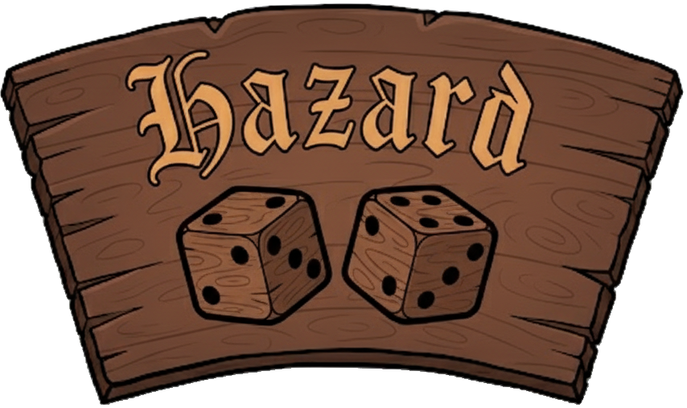

Profile
Connect Wallet
The Dak & Chog Tavern
Choose Your Game!

Welcome to the Tavern
Enhance your experience by setting up your Profile and linking your X handle to share wins.
Set up Profile
Maybe Later
Your Profile
Close
Social
X Handle:
Save Encrypted
Load
Lifetime Stats